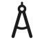
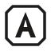
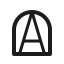
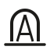
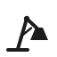
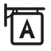

Atelier — round 1
10 options. Each is shown large, at 64, 32 and 16 px, on dark and in one colour, because a mark has to hold up where it will really be used. Reply with the letters you want developed, and any notes.
Aa-compass.svg

PASSED. Drafting compass whose legs are the A, its arc the crossbar. Seen as: drafting compass, letter A, architect's tool. Caveat: all 3 viewers mentioned the Freemasons' square-and-compass; refinement should pull it away from that.
Bb-hallmark.svg

DROPPED. Maker's mark. Seen as: stop sign, 'A-grade' badge, keycap; and it's only the initial (tell: initial-only-mark).
Cc-skylight.svg
DROPPED. North-light studio roof. Seen as: factory roof (the standard manufacturing icon), bar chart, tombstones.
Dd-open-book.svg
DROPPED. Open book standing like an A, ribbon bookmark. Seen as: tent, chevron, downward arrow; one viewer: phallic.
Ee-crew.svg
DROPPED. Six of the crew in one shape. Seen as: pool rack, cannonballs, pyramid scheme, 'Illuminati'.
Ff-window.svg

DROPPED. A in an arched studio window. Seen as: tombstone (all 3 viewers).
Gg-doorway.svg

DROPPED. Rework of F as an open doorway on a floor. Still seen as: tombstone, siren light.
Hh-plumb.svg
DROPPED. Plumb bob (exactness). Seen as: drip, leaf, sperm cell, bomb.
Ii-lamp.svg

DROPPED. Studio desk lamp whose arms make an A. Seen as: Pixar's Luxo Jr. lamp (not ownable).
Jj-guild-sign.svg

DROPPED. Workshop's hanging guild sign. Seen as: generic venue or shop icon, AA sign.